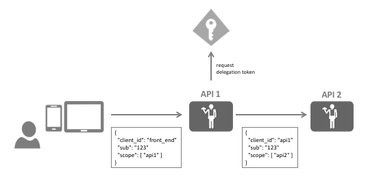

扩展授权¶
OAuth 2.0 定义了令牌端点的标准授权类型，例如 password、authorization_code 和 refresh_token。 扩展授权是一种添加对非标准令牌发行方案（如令牌转换、委派或自定义凭据）的支持的方法。
您可以通过实现 IExtensionGrantValidator 接口来添加对其他授权类型的支持:
public interface IExtensionGrantValidator
{
/// <summary>
/// 处理自定义授权请求。
/// </summary>
/// <param name="request">验证上下文。</param>
Task ValidateAsync(ExtensionGrantValidationContext context);
/// <summary>
/// 返回此验证器可以处理的授权类型
/// </summary>
/// <value>
/// 授权类型。
/// </value>
string GrantType { get; }
}
ExtensionGrantValidationContext 对象使您可以访问：
传入的令牌请求 —— 众所周知的验证值，以及任何自定义值（通过
Raw集合）结果 —— 错误或成功
自定义响应参数
要注册扩展授权，请将其添加到 DI:
builder.AddExtensionGrantValidator<MyExtensionsGrantValidator>();
示例：使用扩展授权的简单委托¶
想象以下场景 —— 前端客户端使用通过交互流程（例如混合流程）获取的令牌调用中间层 API。 这个中间层 API (API 1) 现在想要代表交互式用户调用后端 API (API 2)：
换句话说，中间层 API (API 1) 需要一个包含用户身份的访问令牌，但具有后端 API (API 2) 的范围。
注解
您可能听说过 穷人的委托 一词，其中来自前端的访问令牌只是简单地转发到后端。 这有一些缺点，例如 API 2 现在必须接受 API 1 范围，这将允许用户直接调用 API 2。 此外 —— 您可能希望在令牌中添加一些特定于委托的声明，例如 调用路径是通过 API 1 的事实。
实现扩展授权
前端会将令牌发送到 API 1，现在这个令牌需要在 IdentityServer 上与 API 2 的新令牌交换。
在网络上，对交换令牌服务的调用可能如下所示:
POST /connect/token
grant_type=delegation&
scope=api2&
token=...&
client_id=api1.client
client_secret=secret
扩展授权验证器的工作是通过验证传入的令牌来处理该请求，并返回代表新令牌的结果:
public class DelegationGrantValidator : IExtensionGrantValidator
{
private readonly ITokenValidator _validator;
public DelegationGrantValidator(ITokenValidator validator)
{
_validator = validator;
}
public string GrantType => "delegation";
public async Task ValidateAsync(ExtensionGrantValidationContext context)
{
var userToken = context.Request.Raw.Get("token");
if (string.IsNullOrEmpty(userToken))
{
context.Result = new GrantValidationResult(TokenRequestErrors.InvalidGrant);
return;
}
var result = await _validator.ValidateAccessTokenAsync(userToken);
if (result.IsError)
{
context.Result = new GrantValidationResult(TokenRequestErrors.InvalidGrant);
return;
}
// 获取用户身份
var sub = result.Claims.FirstOrDefault(c => c.Type == "sub").Value;
context.Result = new GrantValidationResult(sub, GrantType);
return;
}
}
不要忘记向 DI 注册验证器。
注册委托客户端
您需要在 IdentityServer 中进行客户端注册，以允许客户端使用此新扩展授权，例如:
var client = new Client
{
ClientId = "api1.client",
ClientSecrets = new List<Secret>
{
new Secret("secret".Sha256())
},
AllowedGrantTypes = { "delegation" },
AllowedScopes = new List<string>
{
"api2"
}
}
调用令牌端点
在 API 1 中，您现在可以自己构建 HTTP 负载，或使用 IdentityModel 帮助程序库:
public async Task<TokenResponse> DelegateAsync(string userToken)
{
var client = _httpClientFactory.CreateClient();
// 或者
// var client = new HttpClient();
// 向令牌端点发送自定义授权，返回响应
return await client.RequestTokenAsync(new TokenRequest
{
Address = disco.TokenEndpoint,
GrantType = "delegation",
ClientId = "api1.client",
ClientSecret = "secret",
Parameters =
{
{ "scope", "api2" },
{ "token", userToken}
}
});
}
TokenResponse.AccessToken 现在将包含委托访问令牌。